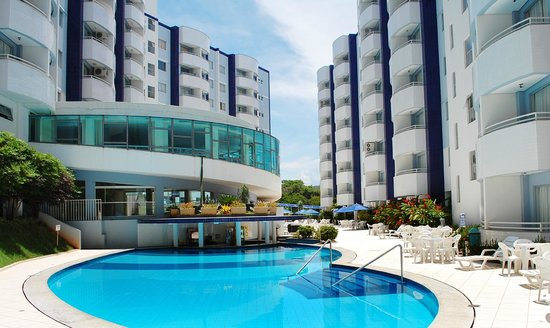

<ion-header>
    <ion-navbar>
            <ion-buttons item-start>
            <button ion-button icon-only (click)="closeModal()">
                <ion-icon name="arrow-round-back"></ion-icon>
            </button>
        </ion-buttons>
    </ion-navbar>
</ion-header>
<ion-content>

<ion-segment>
    <ion-segment-button>Detail</ion-segment-button>
    <ion-segment-button>Review</ion-segment-button>
</ion-segment>

</ion-content>